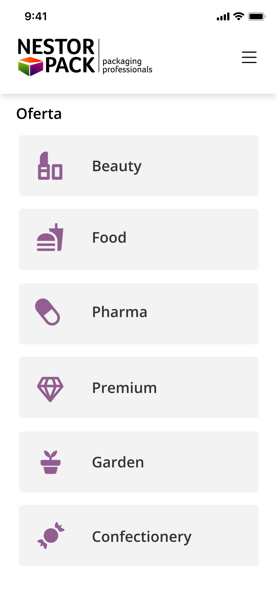
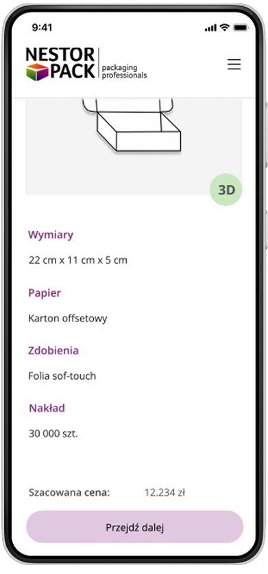

Nestorpack
Mobile version of the Nestorpack
The mobile website project for printing company "Nestorpack" aims to improve the process of ordering packaging. The main goals are to add 2D and 3D visualization features, so customers can preview the products they order before finalizing their purchase.
Home
Login / Registration
Registration - Step 1

Registration - Step 2
Registration - Step 3
Main menu
Coupons

Coupon details
My Nestorpack card
Card details
Offers
Offer details
Offer details – alt
Store locator
Store details

Changes & Assumptions
Color scheme assumptions

Introduce white and gray as the dominant colors.
Incorporate the brand’s logo palette into the UI.
Main Page
Lo-fi
Mid-fi
Hi-fi
Categories
Lo-fi
Mid-fi
Hi-fi
Subcategory
Lo-fi
Mid-fi
Hi-fi
Packaging preview
Lo-fi
Mid-fi
Hi-fi
Summary of selections
Lo-fi
Mid-fi
Hi-fi

Sending a request
Lo-fi
Mid-fi
Hi-fi